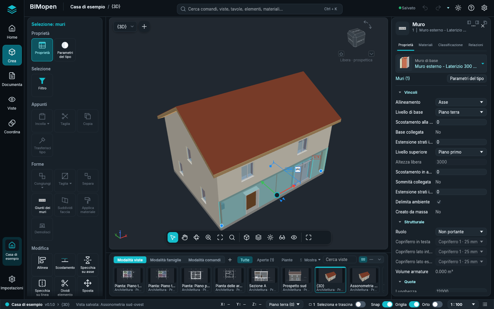
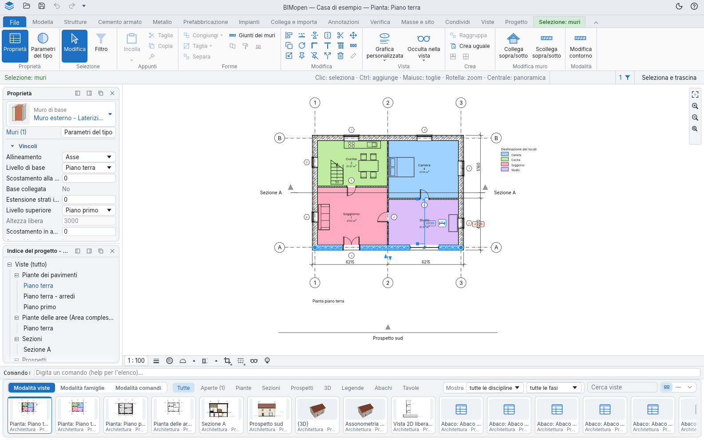
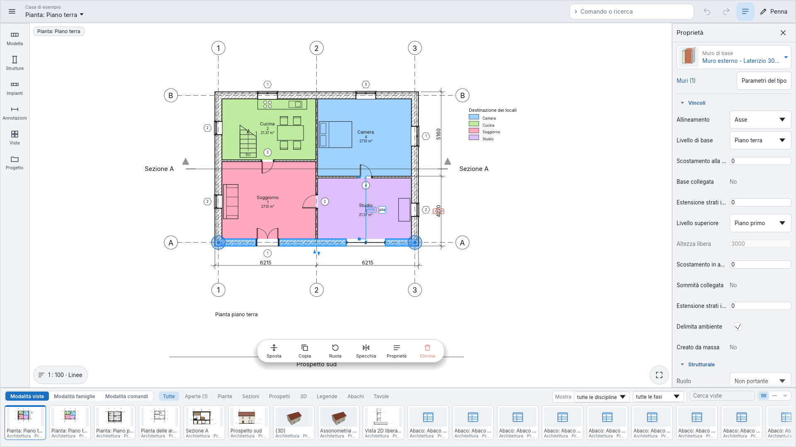
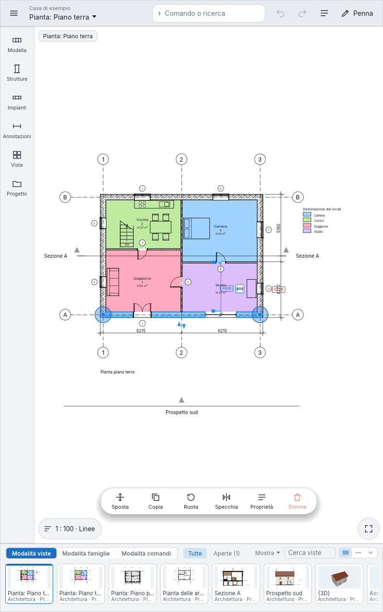
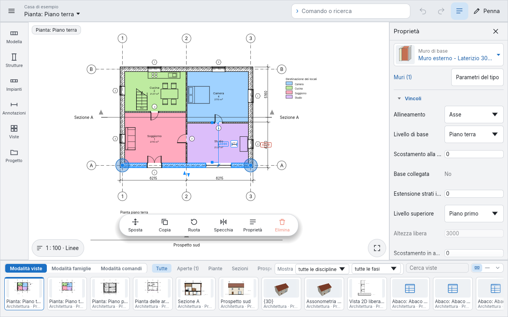
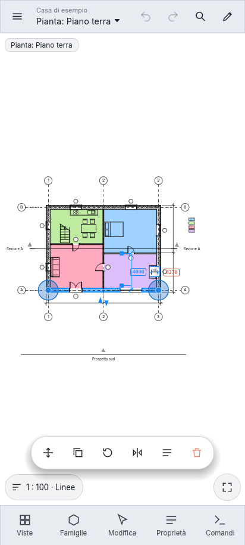
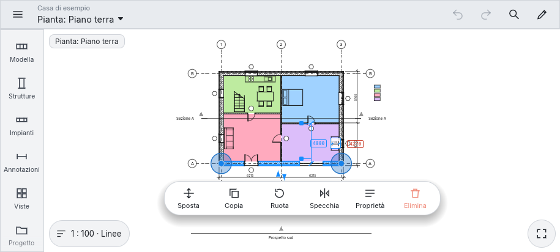

Stili dell'interfaccia
BIMopen ha due stili dell'interfaccia e una modalità touch. Tutti eseguono gli stessi comandi, con gli stessi nomi, le stesse scorciatoie da tastiera e gli stessi risultati; cambiano solo l'aspetto e la posizione degli strumenti.
- Lo stile BIMopen, descritto in L'interfaccia e illustrato in tutto questo manuale: la barra laterale, il pannello degli strumenti, la ricerca dei comandi, il pannello dell'elemento e la striscia delle viste. BIMopen si avvia in questo stile.
- Lo stile Classica: la barra multifunzione con le sue schede, la barra delle opzioni, la tavolozza Proprietà e l'Indice del progetto in pannelli.
- La Modalità touch: la disposizione per gli schermi a sfioramento e le penne, su un monitor touch, un tablet o un telefono.
Scegliere lo stile
- Fai clic sull'ingranaggio all'estremità destra della barra superiore, oppure apri il menu dell'applicazione e scegli Opzioni.
- In Interfaccia utente, imposta Interfaccia su Classica o BIMopen. BIMopen parte nello stile BIMopen.
La finestra cambia subito. La scelta resta memorizzata, sul computer e nel browser, e la sessione successiva si apre nello stesso stile. Tema (Chiaro o Scuro) vale per entrambi gli stili.

In arabo l'intera finestra è speculare, in ogni stile: la barra laterale e il pannello degli strumenti, o le tavolozze, sono a destra, il pannello dell'elemento a sinistra.
Lo stile Classica

| Parte | Dove | Che cosa contiene |
|---|---|---|
| Barra del titolo | In alto | La barra di accesso rapido (Apri…, Salva, Annulla, Ripristina e gli strumenti che aggiungi), il progetto e la vista attiva, il tema chiaro o scuro e il menu ? |
| Barra multifunzione | Sotto la barra del titolo | File, che apre il menu dell'applicazione, poi le schede (Modella, Strutture, Cemento armato, Metallo, Prefabbricazione, Impianti, Collega e importa, Annotazioni, Verifica, Masse e sito, Condividi, Viste, Progetto) con i loro gruppi di pulsanti, e la scheda contestuale mentre uno strumento lavora o qualcosa è selezionato |
| Barra delle opzioni | Sotto la barra multifunzione | Le opzioni dello strumento attivo, come la striscia delle opzioni dello stile BIMopen, e alla sua estremità destra ciò che lo strumento si aspetta o l'elemento sotto il cursore, il numero di elementi selezionati e Seleziona e trascina; con il tasto destro, Ancora in basso |
| Proprietà e Indice del progetto | A sinistra | La scheda Proprietà del pannello dell'elemento, e l'Indice del progetto di Viste, come pannelli che si agganciano su entrambi i lati o restano flottanti |
| Area di disegno | Al centro | Le viste, ciascuna con la sua barra di controllo della vista in basso (scala, dettaglio, ritaglio, isola) e la barra di navigazione sul bordo destro (Zoom per adattare, Zoom avanti, Zoom indietro, Opzioni di zoom) |
| Riga di comando | Sotto l'area di disegno | Il registro e il prompt; ciò che digiti in una vista va lì |
| Striscia delle viste e delle famiglie | In basso | La stessa striscia dello stile BIMopen |
Le voci della barra laterale dello stile BIMopen contengono le schede della barra multifunzione: Crea le schede da Modella a Masse e sito, Documenta le tavole di Viste e Annotazioni, Viste il resto di Viste e l'Indice del progetto, Coordina Verifica e Condividi, Impostazioni Progetto.
Tutto lo stile Classica
Ogni funzione dello stile Classica è nello stile BIMopen, una volta sola:
- ogni pulsante della barra multifunzione è un riquadro del pannello degli strumenti, nella voce della barra laterale che contiene la sua scheda, e la scheda contestuale Modifica è la scheda in cima al pannello mentre uno strumento lavora o qualcosa è selezionato;
- il marchio di BIMopen in cima alla barra laterale apre il menu dell'applicazione; la barra superiore ha annulla, ripristina, gli strumenti di accesso rapido e il menu ?;
- Viste contiene l'intero Indice del progetto, con i suoi menu;
- una miniatura della striscia delle viste si può trascinare sulla tavola aperta, o sulla miniatura di una tavola, e il suo menu del tasto destro ha le azioni dell'Indice del progetto e Apri nella finestra attiva;
- il menu del selettore della vista dispone le finestre delle viste (Passa a vista, Affianca, Sovrapponi, Ingrandisci, Replica, Chiudi nascoste); Ctrl+Tab passa alla finestra precedente;
- il tasto destro su un riquadro offre Aggiungi alla barra degli strumenti Accesso rapido: lo strumento compare nella barra superiore, funziona da qualsiasi sezione della barra laterale e il suo tasto destro offre Rimuovi da barra strumenti Accesso rapido;
- i suggerimenti dei tasti funzionano come sulla barra multifunzione: premi e rilascia Alt (o premi F10), poi la lettera di una scheda apre la sezione della barra laterale che la contiene (la sua lettera compare sulla barra laterale) e le lettere di uno strumento lo avviano.
Modalità touch
La Modalità touch dispone l'interfaccia per gli schermi a sfioramento e le penne: telefoni, tablet e monitor touch. Esegue gli stessi comandi dei due stili, con gli stessi nomi; cambia solo la disposizione, e ogni comando è grande abbastanza per un dito.
Attivarla
Opzioni ▸ Interfaccia utente ▸ Modalità touch ha tre valori:
| Valore | Effetto |
|---|---|
| Automatica | Attiva dove il dispositivo è pensato per il tocco: in un browser con il dito come puntatore o con una finestra larga al massimo 900 pixel, e su Android. Sul desktop resta spenta |
| Sempre | Sempre attiva, anche sul desktop (un monitor touch, un tablet PC) |
| Mai | Mai attiva |
BIMopen ricorda la scelta con le altre preferenze. Menu ▸ Esci dalla modalità touch riporta l'altra interfaccia fino al prossimo avvio.
Telefono, orizzontale e tablet
La disposizione segue lo spazio che ha la finestra.
Su un monitor touch, o in qualsiasi finestra larga (qui 1920 × 1080): la barra a sinistra apre una tavolozza di strumenti per ogni categoria (Modella, Strutture, Impianti, Annotazioni, Viste, Progetto), le proprietà restano a destra, la striscia delle viste e delle famiglie in basso, e il campo Comando o ricerca nella barra in alto, accanto ad Annulla, Ripristina e Penna.

Su un tablet, in verticale (800 × 1280) o in orizzontale (1280 × 800): la stessa disposizione che su un monitor. Dove la finestra è stretta le proprietà vengono messe da parte, per lasciare spazio al disegno: Proprietà nella barra in alto le riporta.


Su un telefono, in verticale (stretto e alto): una barra in alto compatta con il menu, il progetto e la vista (un tocco apre le viste), Annulla, Ripristina, Comando o ricerca e Penna; il disegno occupa tutta la larghezza; cinque grandi pulsanti in basso, Viste, Famiglie, Strumenti (Modifica quando c'è una selezione), Proprietà e Comandi, ognuno apre un pannello dal basso. Trascina la maniglia del pannello in su per allungarlo, in giù per accorciarlo o chiuderlo; un tocco fuori lo chiude.

Su un telefono in orizzontale (basso e largo): una barra a sinistra con le categorie Modella, Strutture, Impianti, Annotazioni, Viste e Progetto, più le viste e le proprietà; i pannelli si aprono a destra.

Gli strumenti sono grandi riquadri con icona e nome. Uno strumento non ancora presente è grigio, Non ancora disponibile; uno che non funziona nella vista 3D (Livello, Griglia, Piano di riferimento, le annotazioni) lì è grigio, Non disponibile nella vista 3D. Un tocco su un riquadro grigio dice perché.
Mentre uno strumento lavora, una striscia verde sotto la barra in alto mostra le sue opzioni e
Fine, che lo termina (o conclude uno schizzo). Mentre disegni un muro, Lunghezza… apre la
riga di comando: scrivi la lunghezza del muro successivo e, se serve, l'angolo, come 4,5 o
4,5 90.
Un tocco seleziona, e i muri selezionati mostrano grandi maniglie alle estremità. Sul disegno una barra mobile offre Sposta, Copia, Ruota, Specchia, Proprietà ed Elimina; una pressione prolungata apre il menu contestuale. In basso a sinistra il pulsante della vista mostra la scala e lo stile grafico e apre Scala, Dettaglio, Stile grafico, Sole e ombre, Ritaglio e Isola temporaneamente; in basso a destra Zoom per adattare.
Gesti e penna
| Gesto | Che cosa fa |
|---|---|
| tocco | seleziona, o colloca il punto dello strumento attivo |
| trascinamento con un dito | come con il mouse: una finestra di selezione, una maniglia, un elemento |
| pressione prolungata | il menu contestuale |
| due dita | sposta la vista; avvicina o allontana le dita per lo zoom; nella vista 3D ruotale per girare il modello |
| doppio tocco | adatta la vista alla finestra |
Penna nella barra in alto è per chi usa una penna: la penna disegna e seleziona, le dita muovono solo la vista (un dito sposta, due dita spostano, ingrandiscono e girano). Una tavolozza della penna sul lato del disegno ha Seleziona, Muro, Porta, Finestra, Linea di dettaglio, Allineata, Testo e Altri strumenti…. In un browser è il browser a distinguere la penna dal dito; nell'app per desktop un tocco che riporta una pressione è preso per una penna.